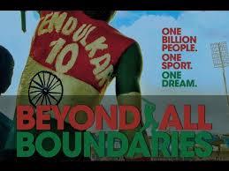
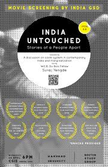
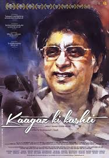

4: Short Cut to Nirvana: Kumbh Mela

Ratings : 🌟 7.2
Genre :Documentary
Release Date : 11 May 2004
Watch-Time : 1h 25min.
Director : Maurizio Benazzo, Nick Day
Starring : Jasper Johal, Justin Davis, Swami Krishnanad
Box-Office : ?
Storyline:
Short Cut to Nirvana Looks at the Kumbh Mela from the point of view of four visitors from the US and Canada, each on their first visit to the event, although one, Los Angeles-based photographer Jasper Johal, is himself an Indian returning for the first time in 23 years. Two of the visitors, Dyan Summers and Justin Davis, befriend a likable young Hindu monk Swami Krishnanand, who acts as their guide and translator, and appears in much of the film. The structure of the film is episodic with an underlying theme that builds, with visits to various elaborate camps set up by gurus and yogis, some of whom have unusual and extreme practices, such as keeping on arm raised for many years or sitting on a throne of nails over a flaming pit. The filmmakers interview several of these spiritual teachers, and these interviews are often interconnected with visual and musical interludes that illustrate the diverse activities taking place at the event. These include ritual bathing, dancing and theatre, head shaving, fire rituals, and other devotional activities. The 14th Dalai Lama, Tenzin Gyatso, also appears in the film as an official guest of Hindu leaders seeking to harmonize relations between Hinduism and Buddhism. The film’s closing scene is the highlight of the Kumbh Mela, known as Mauni Amavasya, the new moon bathing day, which is considered the most auspicious time to take a holy dip at the sangam – the confluence of the Yamuna, Ganges and mythical Saraswati rivers. An estimated 25 million pilgrims enter the sangam during this 24-hour period, which is believed to cleanse their karma for many lifetimes.
3: Beyond All Boundaries
Ratings : 🌟 8.0
Genre : DocumentaryBiographySport
Release Date : April 2013
Watch-Time : 1h 37min.
Director : Sushrut Jain
Starring : Kunal Nayyar
Box-Office : ?
Storyline:
As India, host of the 2011 World Cup of Cricket, begins its campaign to win the Cup after a 28-year drought, three ordinary Indians seek their salvation/escape from a difficult life through their passion for cricket - Sudhir, a penniless superfan who cycles across India to cheer the team; Prithvi, a 12-year old boy wonder who is a cricket prodigy; and Akshaya, a girl cricketer from Mumbai's slums. We follow Sudhir to see what drives the man who has renounced so much, including marriage, for his dream of cheering Team India forever; Akshaya as she competes in the trials for selection to the Mumbai Women's Team, and Prithvi as he copes with the unique pressures of being a cricket phenom in a cricket-crazy nation.
2: India Untouched: Stories of a People Apart
Ratings : 🌟 9.0
Genre : Documentary
Release Date : 14 April 2007
Watch-Time : 1h 48min.
Director : Stalin Kurup
Starring : ?
Box-Office : ?
Storyline:
This documentary is the most comprehensive look at the "untouchables" in India. Motivated by ancient religious edicts, no amount of governmental encouragement has been able to stem the tragic custom that separates human beings according to their birth. Those considered untouchable suffer more than isolation, they are forced to fulfill menial tasks in their communities, drink from separate containers, remove their shoes on the street as a sign of respect and perform or exhibit many other outward signs of their perceived inferiority. While the media projects a positive image of a democratic India, filmmaker Stalin K spends four years traveling the country to expose the continued oppression of the Dalits, "the broken people," in a wide variety of communities, including Sikhs, Christians and Muslims.
1: Kaagaz Ki Kashti
Ratings : 🌟 9.1
Genre : Documentary
Release Date : 11 January 2019
Watch-Time : 2h 7min.
Director : Brahmanand S. Singh
Starring : Ghulam Ali, Talat Aziz, Mahesh Bhatt
Box-Office : ?
Storyline:
In an era when Bollywood music ruled the Indian households, Jagjit Singh made Ghazals a necessity of every music lover's collection. With a voice stirring enough to break or mend your heart, he brought to life some of the most fascinating compositions of all times with unparalleled charm. Kaagaz Ki Kashti traces the life journey of a down-to- earth, small-town boy, who made it big by breaking through the norms and revolutionising the Ghazal scenario, by texturing traditional Ghazal singing with western instrumentation and making it simple and hummable, enticing new listeners into becoming Ghazal fans. Tracing three converging tracks - the struggle and stardom in his musical career, the love and loss in his personal life and the scope and limitations in the music scenario of the times. The film covers not just Jagjit Singh's life, but also of the monumental legacy he has left behind. Through in-depth conversations with friends, family, colleagues and through archival footage, the film ...